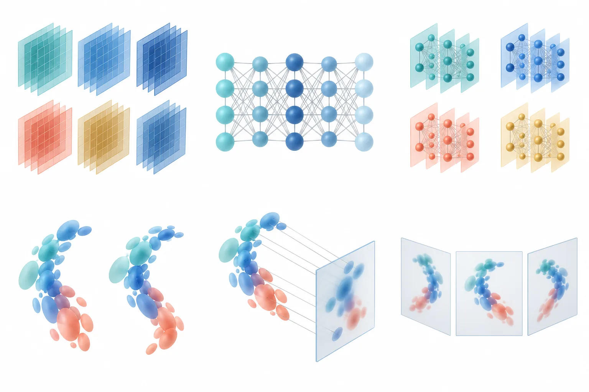

DimFlow：网格与专家分支双向交互的动态高斯重建
DimFlow: Bidirectional Grid-Expert Learning for Dynamic Gaussian Reconstruction
把“网格特征”和“坐标 MLP 专家”做成双向通道：对抗对齐拉分布、自适应门控传信息、残差反馈回写网格，再用四个属性专家（形变/旋转/不透明度/时间）解码成高斯更新。三数据集聚合 39.73 dB、85 FPS、18.9 MB（4D-GS 37.81 dB / 18.3 MB）；组件消融最大项是去掉坐标专家分支 −2.03 dB。注意聚合表跨三个数据集取平均、FPS 列有排版错位，消融基线口径也不一致，按“PSNR 有增益、SSIM/LPIPS 基本并列”读更稳。
aggregate PSNR
PSNR gain vs 4D-GS
largest ablation drop
FPS and storage
作者、单位与技术谱系 · Research context
作者与单位
研究脉络
- 4D Gaussian Splatting（Wu et al., CVPR 2024）方法基座关系：本文直接建立在 4D-GS 的“规范高斯 + 时空特征 + 形变解码”之上，并把它的 37.81 dB / 85 FPS / 18.3 MB 作为主对照点。[论文 §I、Table I]
- DG-Mesh（2026）与 4D 网格化路线对照上游关系：DG-Mesh 代表“用网格承载动态几何”的另一条折中路线，本文以 38.32 dB / 68 FPS / 32.1 MB 与其对比，论证自己的存储效率优势。[论文 Table I 与 §V-B]
- Switch-NeRF / NeRF 混合专家路线方法上游关系：属性专家与坐标专家分支的设计借鉴了混合专家在 NeRF 中的场景分解思路（Switch-NeRF、model-agnostic NeRF mixtures），本文把“专家”从场景划分改为属性划分。[论文 §II-C]
合作网络
- Texas A&M University-Commerce 两人组Gabriel Adineera → Jinoh Kim关系：共同署名（同单位、通讯作者）[论文首页署名脚注]
- 4D-GS 基线实现4D-GS（Wu et al., CVPR 2024） → DimFlow关系：技术依赖（表示基座与同设定基线复现）[论文 §I、Table I]
作者与单位取自首页脚注，通讯作者身份有明确标注。脉络三条分别对应表示基座（4D-GS）、对照路线（DG-Mesh）与专家机制来源（Switch-NeRF 类）。除共同署名与基线依赖外未发现其他公开合作边，论文未给代码仓库。
方法本质拆解 · What actually changed
是不是微调？
是从零训练的动态高斯模型，不是微调：网格、坐标专家、判别器与属性专家一起优化，训练用 AdamW、3e-4 学习率、8 分钟左右（A100），没有任何预训练权重。
有没有额外约束？
新增三项约束：特征级对抗损失（让网格与专家分支的分布兼容）、点对应损失（同一查询两条分支输出一致）、时间损失（相邻特征状态的有限差分趋势）。三者与渲染损失加权求和，缺一项都会掉 PSNR（1.61–1.88 dB）。
推理/后端到底做了什么？
推理只做前向查询：对每个高斯位置查多分辨率网格与坐标专家，按门控融合，过四个属性专家得到形变/旋转/不透明度/时间更新，再泼溅渲染；判别器只在训练期存在，推理不增加开销，因此帧率与 4D-GS 持平。
方法本质是什么？
本质是给“局部存储 + 全局连续”这两类归纳偏置建一条双向通道，并用三层校验（分布、对应、门控）保证它们不会各说各话。效果是同存储量级下 PSNR +1.92 dB；代价是训练目标变复杂（四项加权），且判别器引入了额外的训练不稳定风险。
输入多视角动态视频，改动的是动态高斯的特征来源（网格 + 坐标专家双向交换）与属性解码（四专家），直接效果是 39.73 dB / 85 FPS / 18.9 MB，相对 4D-GS +1.92 dB。

结论与问题Conclusion & Motivation
核心结论
动态高斯的瓶颈不只是“能不能插值出正确属性”，而是网格插值出的属性在空间与时间上是否互相兼容：形变、旋转、不透明度往往被同一组特征耦合决定，一处插值误差会同时污染几何与外观。DimFlow 的结论是给网格配一条连续的坐标专家分支，并让两者双向交换（对齐分布、门控融合、残差回写），可以在几乎不增加存储的前提下把 PSNR 提高 1.92 dB。它的效率结论同样重要：+0.6 MB 存储、训练多 1 分钟，渲染帧率保持 85 FPS，说明这条路线不是“用算力换画质”。
动机与问题
NeRF 类方法建立了连续外观表达，动态扩展引入时间映射，显式/因子化特征（TiNeuVox、TensoRF、HexPlane、K-Planes）降低了查询成本，高斯泼溅又把渲染基底换成显式基元。4D-GS 用规范高斯 + 紧凑时空特征 + 形变解码把这条路做得相当实用，但它的特征完全依赖局部存储：插值准不等于属性兼容，尤其是在大形变与遮挡边界处。作者要问的是：能不能在不放弃网格查询效率的前提下，补上一条“全局连续、可泛化到未观测坐标”的专家通路，并让两条通路真正交换信息，而不是简单拼接。
方法Method
方法总览
表示层是多分辨率因子化网格（局部、快）与坐标 MLP 专家分支（连续、平滑）并行；交互层做三件事：特征判别器做特征级对抗对齐，把两条分支的分布拉到一起；通道级自适应融合按查询位置动态加权两条分支的响应；激活掩码残差反馈把融合后的残差按激活掩码回写到网格，实现训练期的“网格精修”。属性层用四个专家分别负责形变、旋转、不透明度与时间，时间模块对相邻特征状态做有限差分（局部平均 + 运动趋势）后送入解码器预测高斯更新。总损失为渲染项 + 对抗项 + 对应项 + 时间项的加权和。
关键技术细节
坐标生成器是五层 GELU MLP，通道级层级权重组合多分辨率网格响应；时间耦合用有限差分 d(t+Δt) − 2d(t) + d(t−Δt) 式的趋势估计，把“平均”和“运动方向”分开处理。对抗对齐由判别器区分特征来自哪条分支，迫使两条分支的分布兼容；对应项约束同一查询点两条分支的输出一致；残差反馈只在激活掩码内回写，避免在无关区域改动网格。作者在 §IV 专门论证了三件事：分布匹配并不自动修复对应关系、自适应门控提供了一条新的学习路径、时间平均与趋势补偿需要分开建模——这三点是对“为什么不能只做对抗对齐”的直接回答。
实验Experiments
实验设置
数据覆盖合成与真实：D-NeRF（8 个场景，合成运动）、HyperNeRF（8 个场景，真实）、DAVIS（10 段序列，真实），聚合比较共 26 个场景/序列，硬件为 NVIDIA A100。指标为 PSNR / SSIM / LPIPS，另报训练时间（min）、渲染帧率（FPS）与模型存储（MB）。对照包括 K-Planes、TiNeuVox-B、HexPlane、4D-GS、MSTH、DG-Mesh，基线均按其原配置训练；属性专家实验另报光流一致性误差 FlowsME、时间 SSIM 波动 TSV 与弹性形变误差 EDE，用 AdamW、学习率 3e-4、五次运行取均值。
实验数字与比较
Table I（三数据集聚合）：DimFlow 39.73±0.06 dB / 0.98 SSIM / 0.02 LPIPS / 8 min / 85 FPS / 18.9 MB；4D-GS 37.81±0.11 / 0.98 / 0.02 / 7 min / 85 FPS / 18.3 MB；DG-Mesh 38.32±0.13 / 0.97 / 0.02 / 8 min / 68 FPS / 32.1 MB；K-Planes 35.71、TiNeuVox-B 35.42、HexPlane 35.21、MSTH 34.88。Table II（D-NeRF 组件消融，全模型 39.73）：去坐标专家 −2.03 dB，去对抗对齐 −1.88 dB，去时间特征流 −1.79 dB，去双向交换 −1.71 dB，去自适应加权 −1.61 dB。Table III（属性专家，全模型 38.79）：去形变专家 36.53（−2.26 dB），去时间专家 37.12（−1.67 dB）。
消融/失败边界
组件消融的排序说明两件事：一是“有连续的专家分支”比“对齐得更好”更重要（−2.03 vs −1.88 dB），二是所有单项移除都同时恶化 PSNR 与 LPIPS，没有出现“去掉某项反而更好”的伪贡献，这在 4DGS 类论文里不算常见。失败边界主要有两条：其一是聚合指标掩盖序列级失败——作者自己指出图像指标不能揭示每条序列的极端情况，特征投影也无法证明单个高斯的轨迹正确；其二是帧率与存储强依赖分辨率与基元数，Table I 中 DG-Mesh 存储 32.1 MB 却只有 68 FPS，说明跨方法的效率比较必须同分辨率同基元数才公平，而文中未给这一归一化。此外 Table I 的 FPS 列存在排版错位（K-Planes 行 FPS 显示为 0.97，与 SSIM 同值），列对齐需回原文核对。
局限与迁移Limitations & Transfer
局限与待核验
作者承认的局限集中在“结论的适用范围”：聚合图像指标不覆盖序列级失败，特征投影不能证明轨迹正确，帧率/存储随分辨率与基元数变化，因此效率比较只能在同设定下读。我们还要核验：一是 39.73 dB 这个数字既出现在 Table I（三数据集聚合）又作为 Table II 的 D-NeRF 单集基线，两次口径不同却同值，存在混淆风险；二是只有两位作者、单一单位，复现细节（判别器结构、门控形式）依赖正文描述，且未见代码；三是“匹配 4D-GS 的 85 FPS”是与 4D-GS 原文报告值对齐，不是同机复测；四是 SSIM/LPIPS 在显示精度上多处并列，实际增益主要体现在 PSNR。
与你研究路线的关系
对可靠状态估计而言，这篇的可借鉴点不在渲染，而在“两条异质特征通路如何做一致性约束”：对抗对齐管分布、对应项管点wise一致、门控管动态权重——这正对应我们在多传感器融合里处理“不同模态特征尺度与噪声特性不一致”的问题，可以把“分布对齐 + 点对应 + 自适应门控”当作三层校验模板。第二个可迁移点是它把“时间平均”和“运动趋势”分开建模（有限差分拆成平均项与趋势项），这与我们平滑器里“过程噪声 vs 系统偏差”的分解是同一思路。下一步实验建议：在我们的多模态残差上做一个最小对照——只加分布对齐、只加点对应、两者都加——看内点率与 ATE 的配对变化，确认哪一层真正带来鲁棒性。